Experimental Tools
Calculators and quick references for neutron scattering and related experiments.
Disclaimer: These tools are experimental and may still have bugs/errors. If you spot one, please tell me!
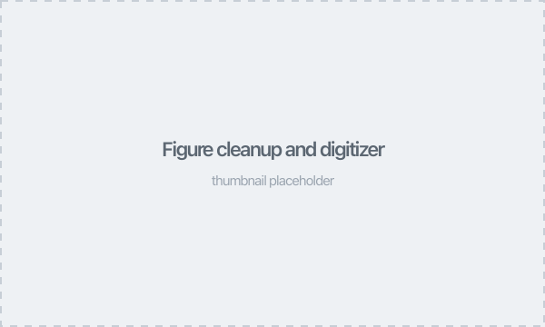
Figure cleanup and digitizer
Crop and clean up figure images, then digitize data from plots or measure distances on map-like images. Calibrate axes or a scale bar and export points as CSV.
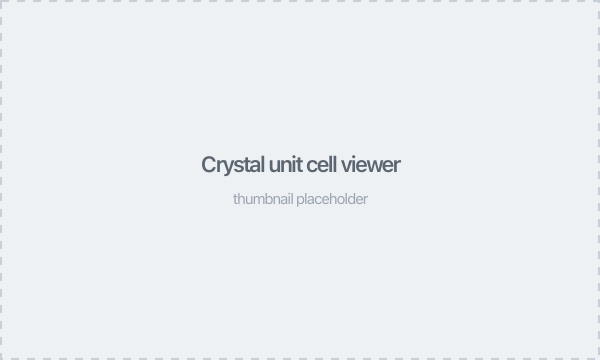
Crystal unit cell viewer
Import CIF files, edit atom positions and lattice parameters, and build a configurable unit-cell visualization with atom, bond, lighting, and view controls.
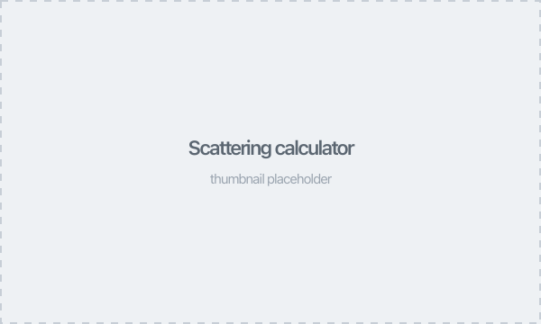
Scattering calculator
Generate allowed Bragg peaks from a unit cell, space group, and wavelength, with structure factors, single-crystal and powder intensities, count-rate estimates, magnetic satellites, and optional scattering-plane angles.
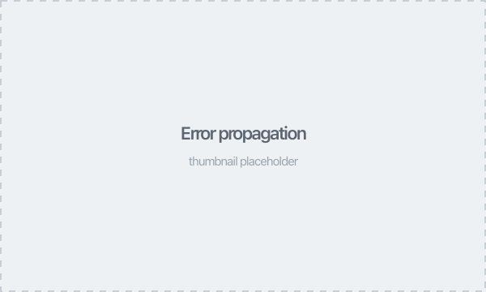
Error propagation
Symbolically propagate independent uncertainties through formulas using lowercase variables and uppercase constants.
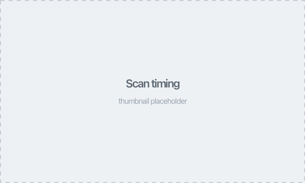
Scan timing
Plan a series of equal-length scans for a fixed run time, or estimate the finish time of a sequence already in progress from a calibration window.
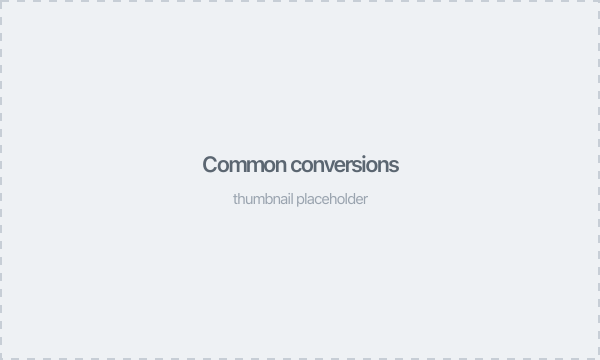
Common conversions
Convert between common energy, wavelength, frequency, temperature, and neutron scattering units.
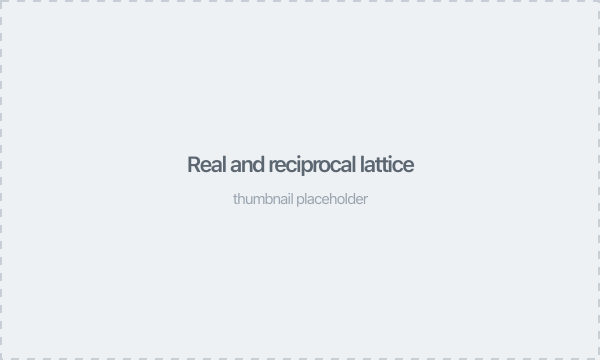
Real and reciprocal lattice
Convert between real-space lattice parameters, real-space lattice vectors, and reciprocal-space vectors, and look up |G(hkl)| in inverse angstroms.
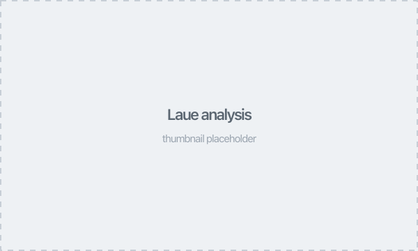
Laue analysis
Index x-ray and neutron Laue patterns from area-detector images. Overlay predicted reflections, detect peaks, and refine crystal orientation.
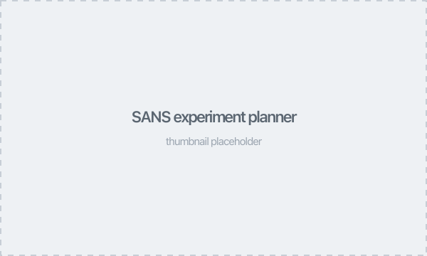
SANS experiment planner
Estimate accessible Q range, scattering geometry, and pinhole-collimated instrument resolution for small-angle neutron scattering experiments.
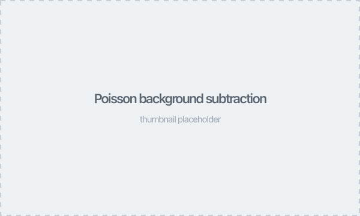
Poisson background subtraction
Optimize signal and background counting times for background-subtracted Poisson measurements.
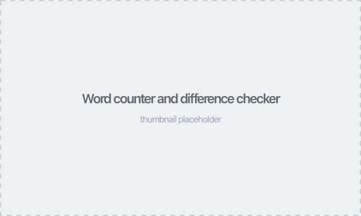
Word counter and difference checker
Count characters, words, sentences, and paragraphs, or compare two text versions with inline highlighting of additions and deletions.
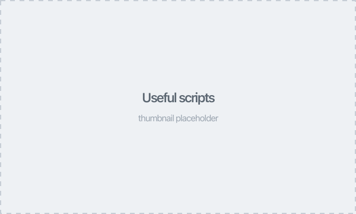
Useful scripts
Downloadable helper scripts for MATLAB, Python, and other languages — including plot-prettifying utilities for publication-quality figures.
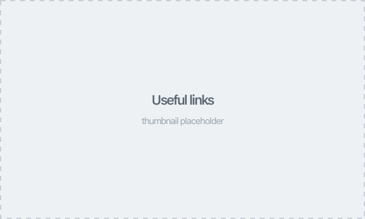
Useful links
Quick access to neutron scattering references, ORNL systems, analysis tools, and status pages.